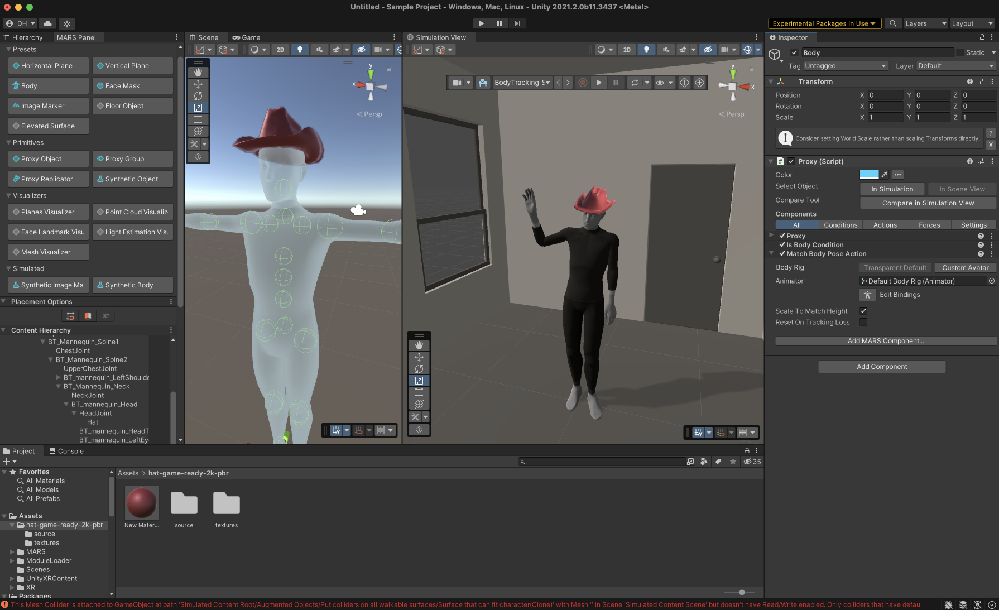
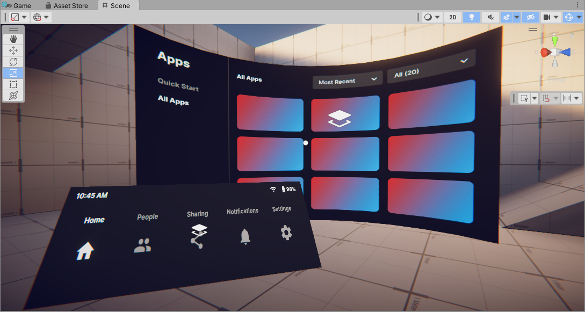
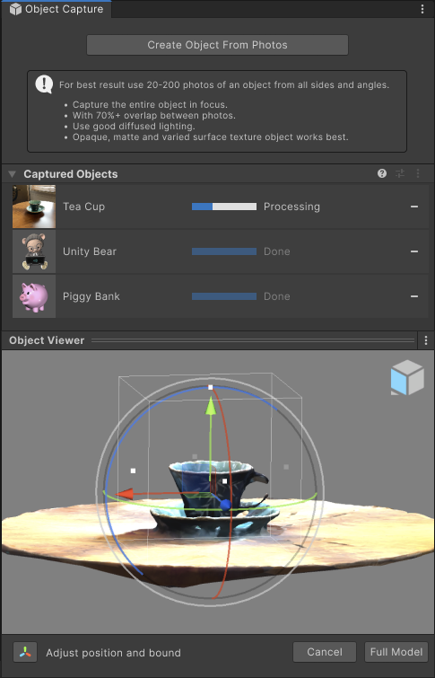
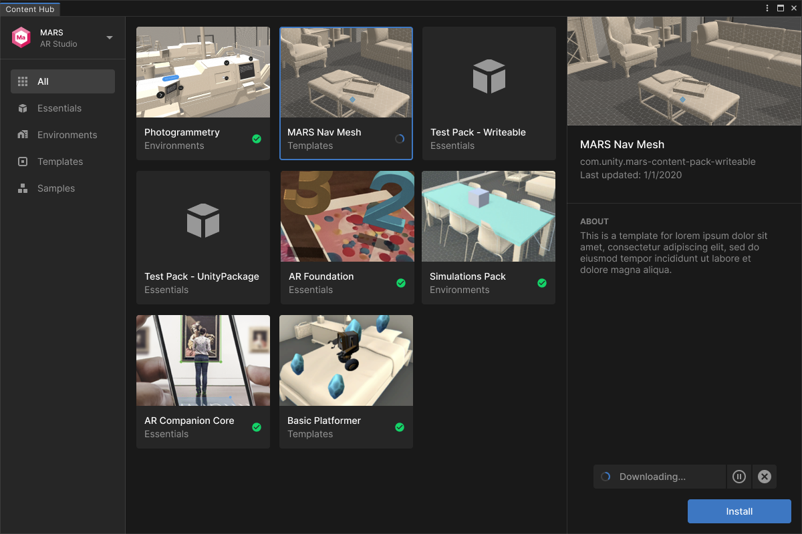

Unity XR
Unity is the most popular engine for creating XR experiences, commanding around 70-80% of the marketshare. I am the Senior Product Designer on the XR team that is in charge of all things workflow related.
Because Unity XR is very feature-rich, I have designed everything from XR project configuration, to importing and managing assets and content, selecting and controlling simulations, body tracking workflows, capturing 3D objects from photos, composition layers setup, and many more.


